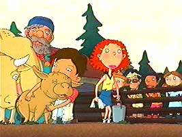
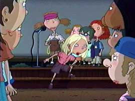
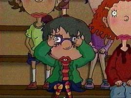

|

|
Episode Nineteen:
SUMMER OF CAMP CAPRICE
Part 2
Written by Emily Kapnek
Directed by Ron Noble
Carl and Hoodsey continue in their investigation to find the missing pets, Courtney deals with mosquitos and a nature hike while Darren and Miranda clean the barracks.
When Sasha overhears Courtney talking about Ginger going out with Ian Richardson back home, will she be able to convince him that she doesn't really have a boyfriend?
Plus: We get to hear Ginger sing!
|
|

|
Episode Twenty:
SUMMER OF CAMP CAPRICE
Part 3
Written by Emily Kapnek
Directed by Jared Faber
As the camp season winds to a close, Miranda and Darren get rescued by Ginger and her friends, Macie conquers her fear of swimming and Dodie learns that following the rules all the time might not be the best way to go.
Meanwhile, Ginger expresses her feelings to Sasha through song and Courtney finally gets camp spirit.
Back at home, Carl and Hoodsey set a trap for the dog-napper.
|
|
|
Episode Twenty One:
NEVER CAN SAY GOODBYE
Written by Emily Kapnek
Directed by Mark Risely
Darren gets his braces removed and suddenly becomes attractive to every girl at school.
Will Miranda ruin his friendship with Ginger when she becomes his girlfriend?
Meanwhile, Brandon's monkey, Mr. Licorice, is missing and Carl and Hoodsey go looking for it.
|
|

|
Episode Twenty Two:
GYM CLASS CONFIDENTIAL
Written by Eryk Casemiro
Directed by Dean Criswell
The girls prepare for a screening of a film about puberty in their gym class that Macie is dreading.
Will she be able to sit through it or will she chicken out?
Meanwhile, Hoodsey deals with being too embarrassed to shower after his gym class.
|
|
|
Episode Twenty Three:
FAST REPUTATION
Written by Barbara Schwartz and Shelia M. Anthony
Directed by Joseph Scott
Ginger is sick of being called a "nice girl" by Courtney's friends, so she decides to sneak into a high school party with Miranda and Macie on a school night.
There she meets Jake, a "cool" high schooler.
When Miranda and Courtney find out and begin spreading rumors about Ginger and her new crush, can she put things right, or will the nice girl suddenly have a "bad reputation"?
Meanwhile, Carl and Hoodsey set up a food cart.
|
|
|
Episode Twenty Four:
NURSES STRIKE
Written by Shelia M. Anthony
Directed by Michael Daedalus Kenny
Ginger's mom is on strike and needs to bring money in, so she decides to do house cleaning.
When Ginger needs $50 to go on a class trip to New York, will she end up helping out her mom without anyone finding out?
|